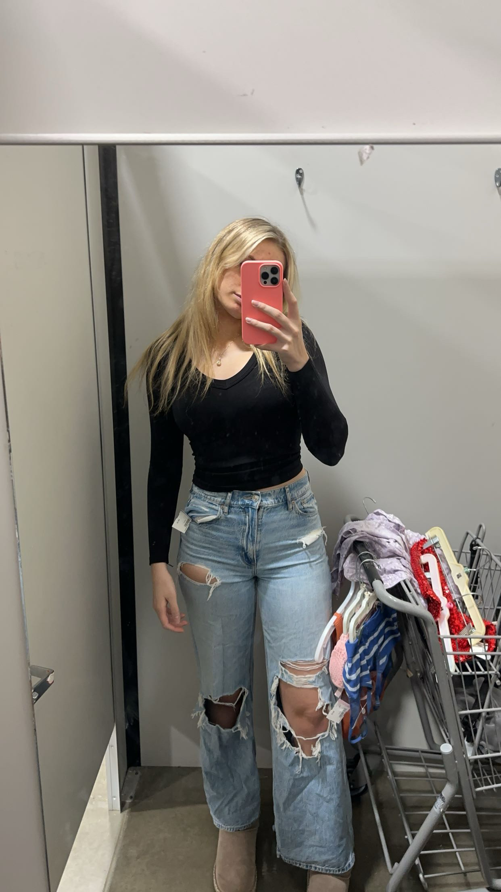
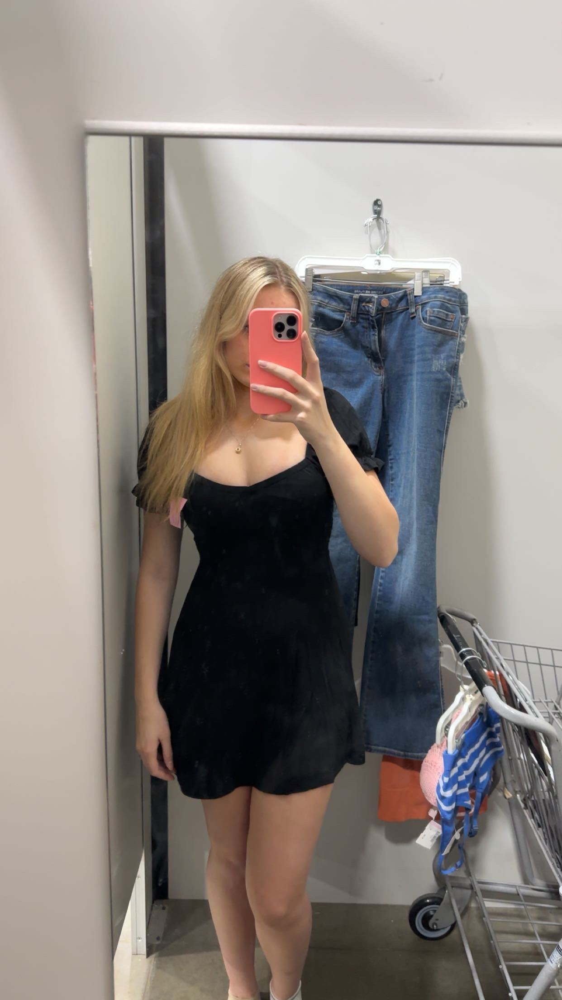

About Savannah
Thrifting is one of my favorite hobbies because it feels like a treasure hunt, full of surprises and opportunities to find great deals. I love being able to get high-quality items, especially clothes, for just a fraction of their original price—paying full price for things has never been my style. Unlike regular stores, where you see multiple copies of the same item, thrift stores are a collection of unique pieces, each with its own story. You never know what you're going to find, and that unpredictability is what makes it exciting. To me, thrifting is almost like a competition—digging through the racks to uncover the hidden gems and walking away with the best finds is always a thrill. My favorite store to thrift at is the goodwill in Huntley, which is the only store I go to because of the half off colored tag day promotion. My newest treasure hunt is for a wood stained dresser with shelves and mirrors attached, so that I can take the mirror off of the dresser and put it on my desk to replace my tiny mirror. The shelves would make amazing storage for my hair and makeup items.

some of my favorite things to thrift are:

I thrifted this dress the other day for my sister to wear to work. It was so comfortable I almost kept it for myself.
I think the reason I enjoy wearing thrifted clothes more than brand new is because they are already pre-loved, and a little worn in. They dont have that new clothes firmness to them. For example, I strongly dislike buying jeans new for two reasons. Reason number one is that there always so expensive, but more importantly, reason number two-they are always too firm, and too tight in the wrong spots. New jeans always feel like you just wrapped the inside of the pants in double sided tape before you tried to pull them up. On the other hand, thrifted jeans have already been broken in by the previous owner, so they fit more comfortably. Another plus is your able to find stykles that "aren't in style" anymore. Skinny jeans are a great example of this. I love a good pair of skinny jeans, but since the style isn't trending anymore and everyone is wearing straight jeans or mom jeans, it's almost impossible to find a cute pair of skinny jeans.